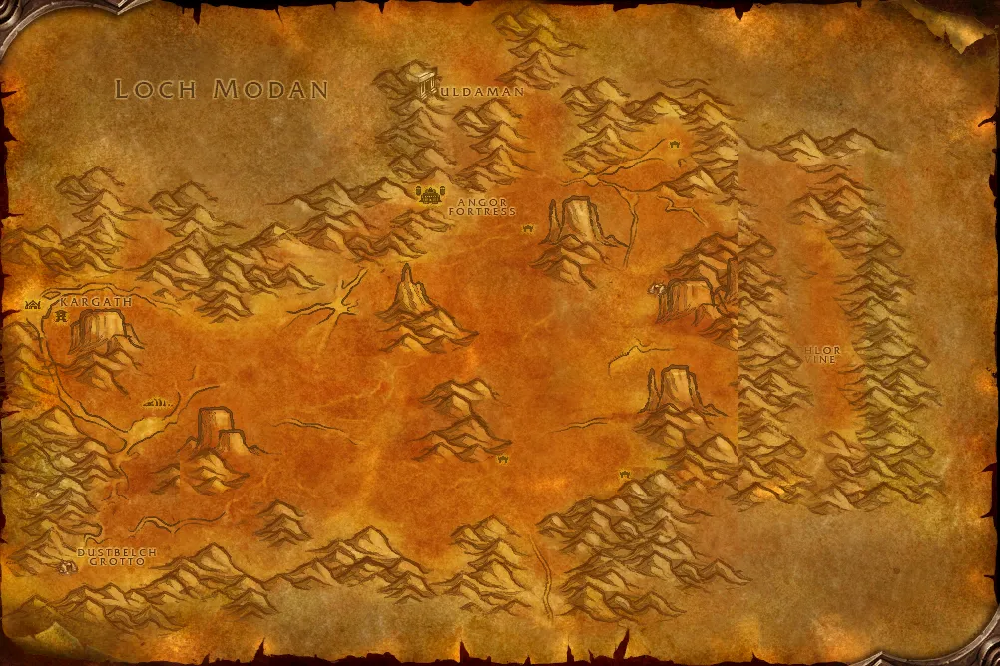

Accès
 Entrée Terres ingrates 44.6, 12.1
Entrée Terres ingrates 44.6, 12.1 5 joueurs · niveaux 36 à 45
5 joueurs · niveaux 36 à 45 29 quêtes · 9 boss
29 quêtes · 9 boss
Le point rouge marque l'entrée du donjon.
Toutes les zones sont sur notre carte interactive.
Un site titan enfoui sous les Terres ingrates, où nains Sombrefer et troggs se disputent les secrets des créateurs.
📅 Mise à jour le 4 novembre 2026🛠 Patch 1.60.1.70755

Entrée Terres ingrates 44.6, 12.1 5 joueurs · niveaux 36 à 45 29 quêtes · 9 bossLe point rouge marque l'entrée du donjon.
Toutes les zones sont sur notre carte interactive.
| Objet | Type |
|---|---|
| Frappe-roche | Deux mains |
| Déchireuse | Deux mains |
| Pierre archaïque | Doigt |
| Objet | Type |
|---|---|
| Jambières en cuir huilé | Jambes |
| Habit tribal de Grimlok | Torse |
| Pique de Grimlok | Deux mains |
| Objet | Type |
|---|---|
| Sabre nordique | Une main |
| Objet | Type |
|---|---|
| Casque viking à cornes | Tête |
| Bottes de course usées | Pieds |
| Objet | Type |
|---|---|
| Bouclier polyvalent d'Olaf | Bouclier |
| Objet | Type |
|---|---|
| Bottes de Revelosh | Pieds |
| Garde-bras de Revelosh | Poignets |
| Spallières de Revelosh | Épaules |
| Gants de Revelosh | Mains |
| Objet | Type |
|---|---|
| Poings de la combe | Mains |
| Espauliers Rockshard | Épaules |
| Objet | Type |
|---|---|
| Pantalon Stoneweaver | Jambes |
| Bâton ferré | Deux mains |
| Brassards d'Ironaya | Poignets |
| Objet | Type |
|---|---|
| Crache-flammes de Galgann | Distance |
| Marteau de feu de Galgann | Une main |
| Mantelet de prophète des flammes | Épaules |
| Cape en écailles de braise | Dos |
Butin d'après les données de WoW Classic : Forever a ajouté de nouveaux objets dans les donjons, la liste sera complétée en jeu. Seuls les objets de qualité inhabituelle et mieux sont listés. Passe la souris sur un objet pour voir ses caractéristiques (info-bulle Wowhead), ou clique pour ouvrir sa fiche.
Donnée par : Prospecteur Ryedol (Terres ingrates)
Donnée par : Rigglefuzz (Terres ingrates)
Récompense : Cercle de pierres alimenté · Brassards de Duracin · Bottes perdurantes
Donnée par : Prospecteur Ironband (Loch Modan)
Récompense : Gants de prospecteur
Donnée par : Hammertoe Grez (Terres ingrates)
Donnée par : Baelog (Uldaman)
Récompense : Pourfendeuse naine · Lanterne de la Ligue des Explorateurs
Donnée par : Theldurin l’Egaré (Terres ingrates)
Récompense : Robe d'auspice funeste
Donnée par : Prospecteur Stormpike (Forgefer)
Donnée par : en ramassant Collier brisé
Donnée par : Talvash del Kissel (Forgefer)
Donnée par : Dran Droffers (Orgrimmar)
Donnée par : Dran Droffers (Orgrimmar)
Donnée par : Restes d’un paladin (Uldaman)
Donnée par : Jarkal Mossmeld (Terres ingrates)
Donnée par : Talvash del Kissel (Forgefer)
Récompense : Fiole de divination de Talvash
Donnée par : Ghak Healtouch (Loch Modan)
Récompense : Potion de restauration
Donnée par : Jarkal Mossmeld (Terres ingrates)
Récompense : Potion de restauration
Donnée par : Talvash del Kissel (Forgefer)
Donnée par : Krom Stoutarm (Forgefer)
Donnée par : Patrick Garrett (Fossoyeuse)
Donnée par : Restes d’un paladin (Uldaman)
Donnée par : Jarkal Mossmeld (Terres ingrates)
Donnée par : —
Donnée par : Talvash del Kissel (Forgefer)
Récompense : Collier d'amélioration de Talvash
Donnée par : Dran Droffers (Orgrimmar)
Récompense : Collier d'amélioration de Jarkal
Donnée par : Jarkal Mossmeld (Terres ingrates)
Donnée par : Conseiller Belgrum (Forgefer)
Récompense : Médaille de courage
Donnée par : —
Donnée par : —
Donnée par : —
Noms des quêtes, des PNJ et des objets d'après les données du jeu (Polestar, CC BY 4.0, et Factoruide/Questie).